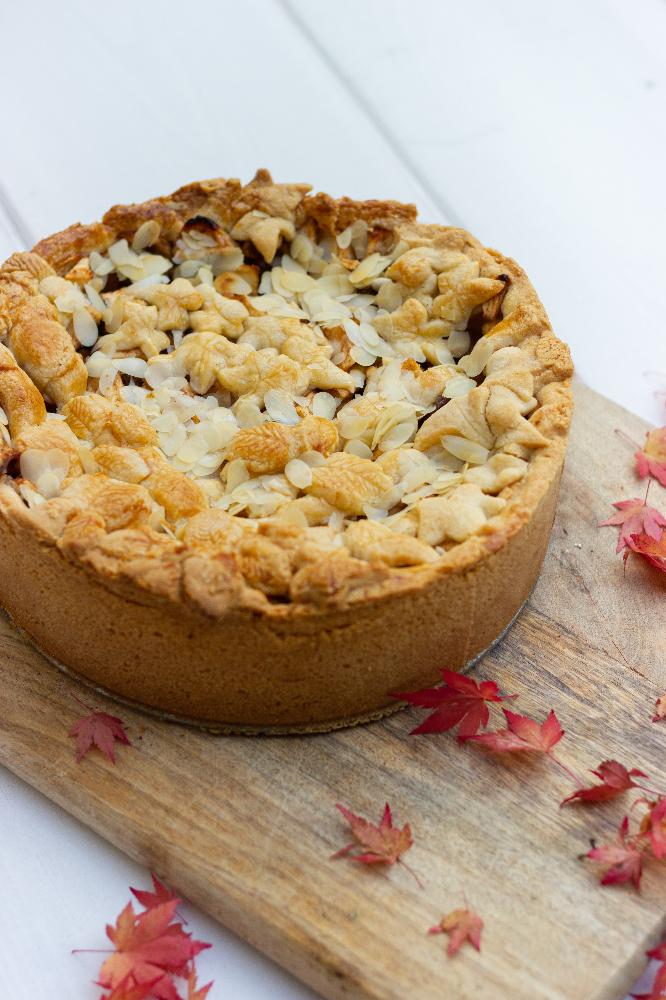

recette du fondant au pomme 🍎

ingredients
4 pommes;
3 oeufs;
3/4 de verre de lait;
1 pot et demi de sucre;
2 pots et demi de farine;
2 cas de poudre d'amandes;
1 cas de poudre de cannelle;
1/2 pot d'huile;
1 sachet de levure chimique;
1 cac de vinaigre blanc;
preparation
1_Commencer par peler et par couper en fines tranches les pommes, puis disposez-les au fond de votre moule a gateau prealablement recouvert de papier cuisson.
2_dans un saladier blanchissez les oeufs et le sucre puis ajouter le lait, l'huile, la levure, le vinaiagre et en derniere position la farine et la poudre d'amandes.
3_verser la patte sur les pommes dans votre moule puis parsemez de poudre de cannelle.
4_enfournez a 180 degres pendant 35 a 45mn.
5_c'est pret ⚡